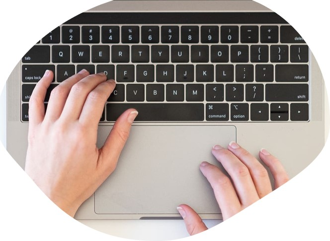

Contact

I hope you have enjoyed some of the content in this website. Please feel free to fill out our form with any suggestions, comments, or additional resources you would like to see added to this guide.